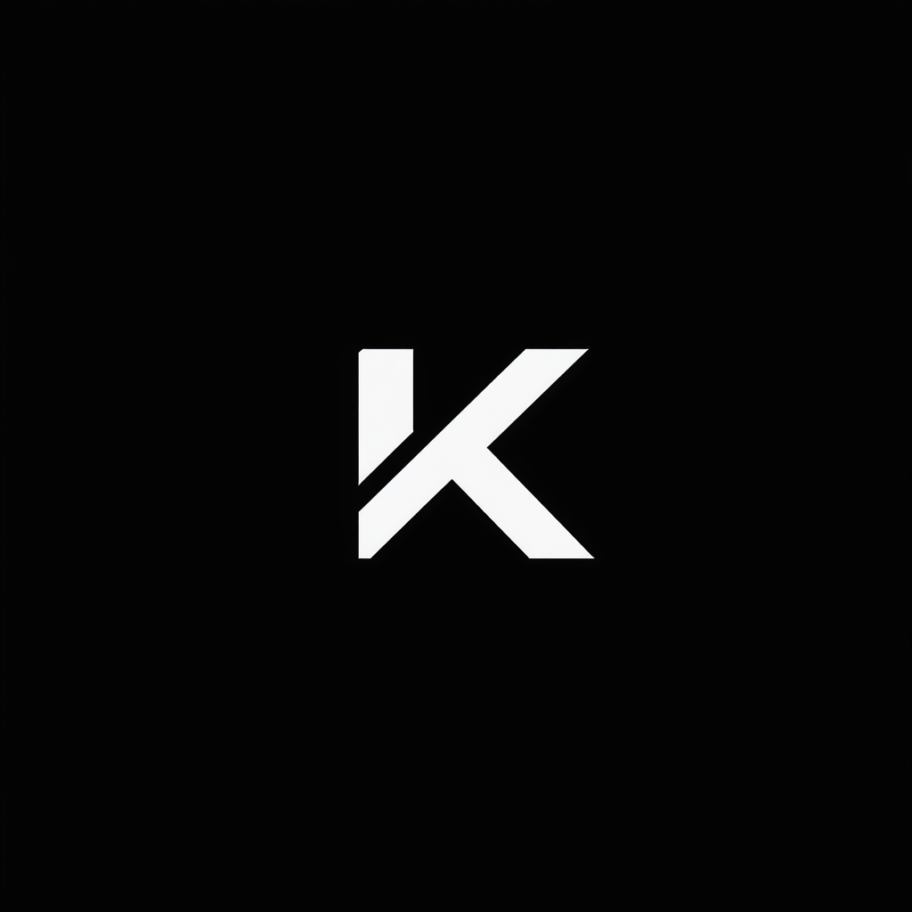
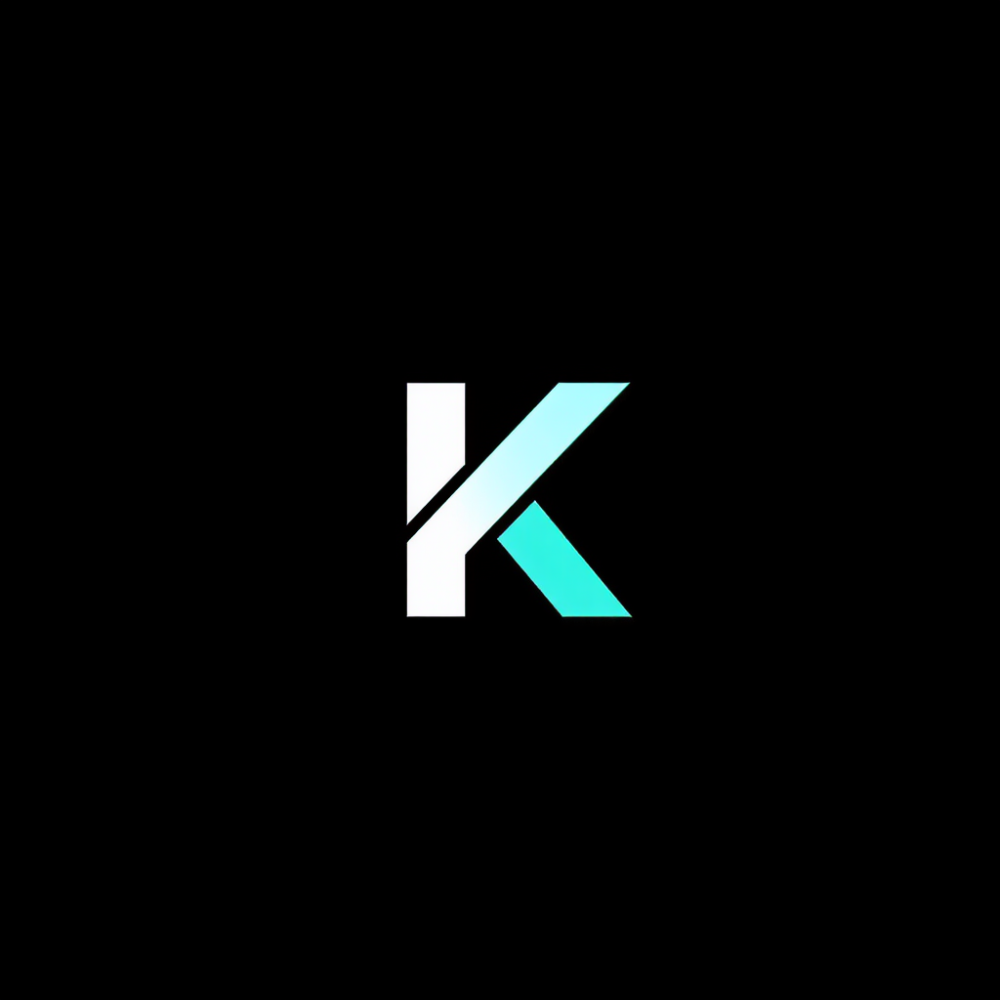
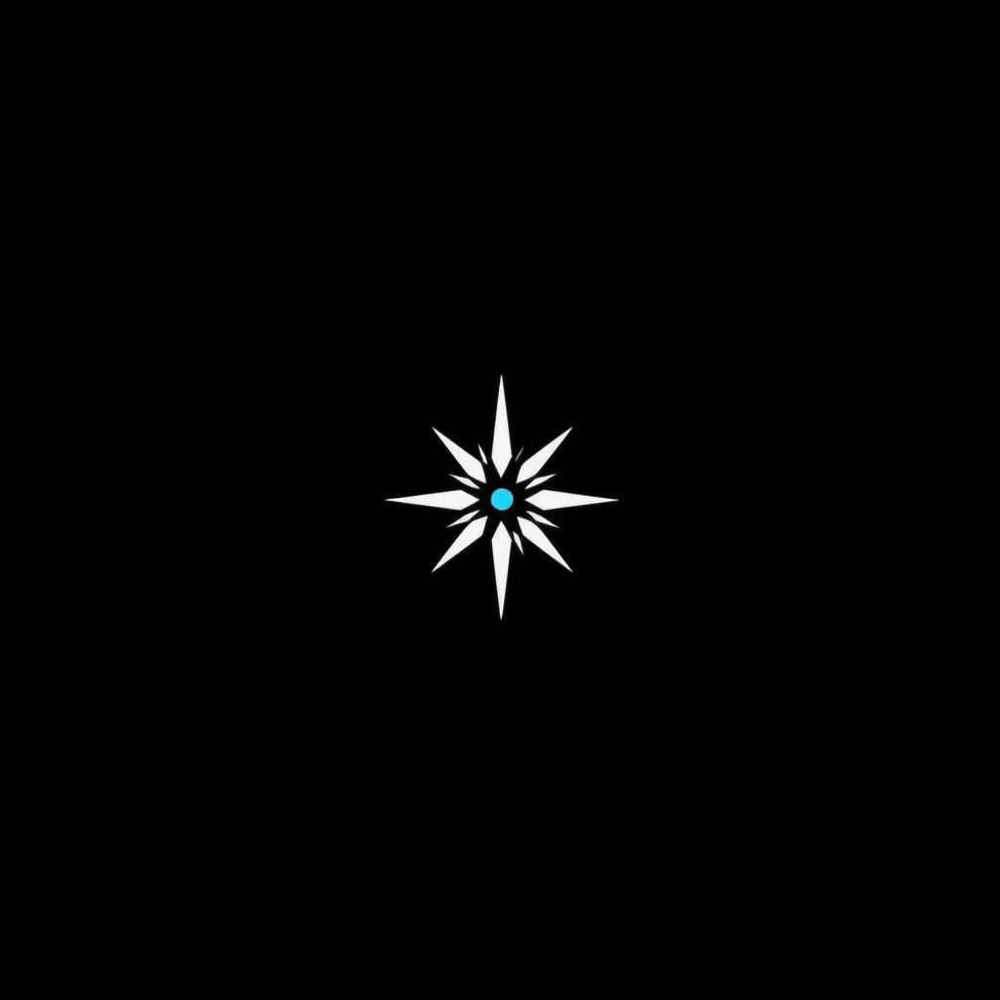
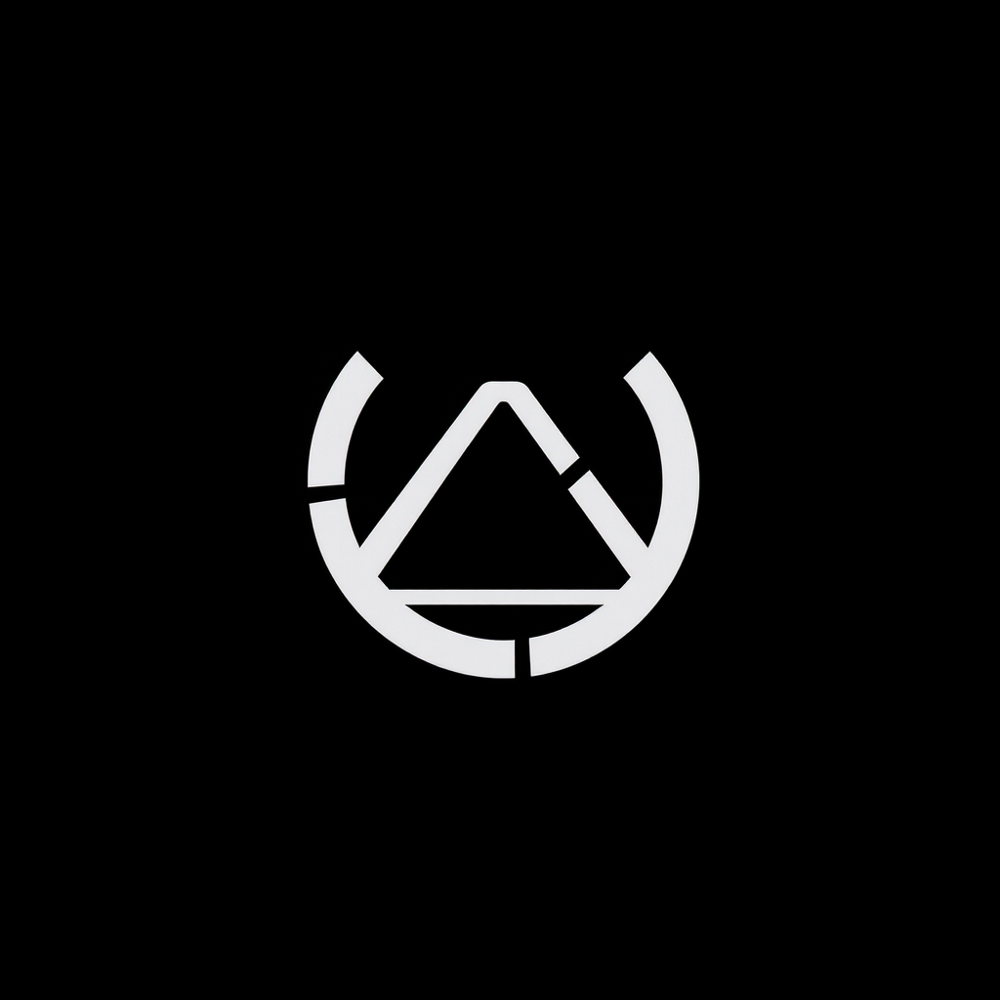
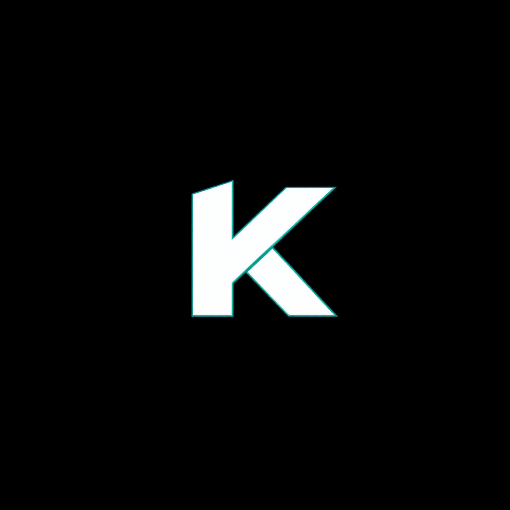
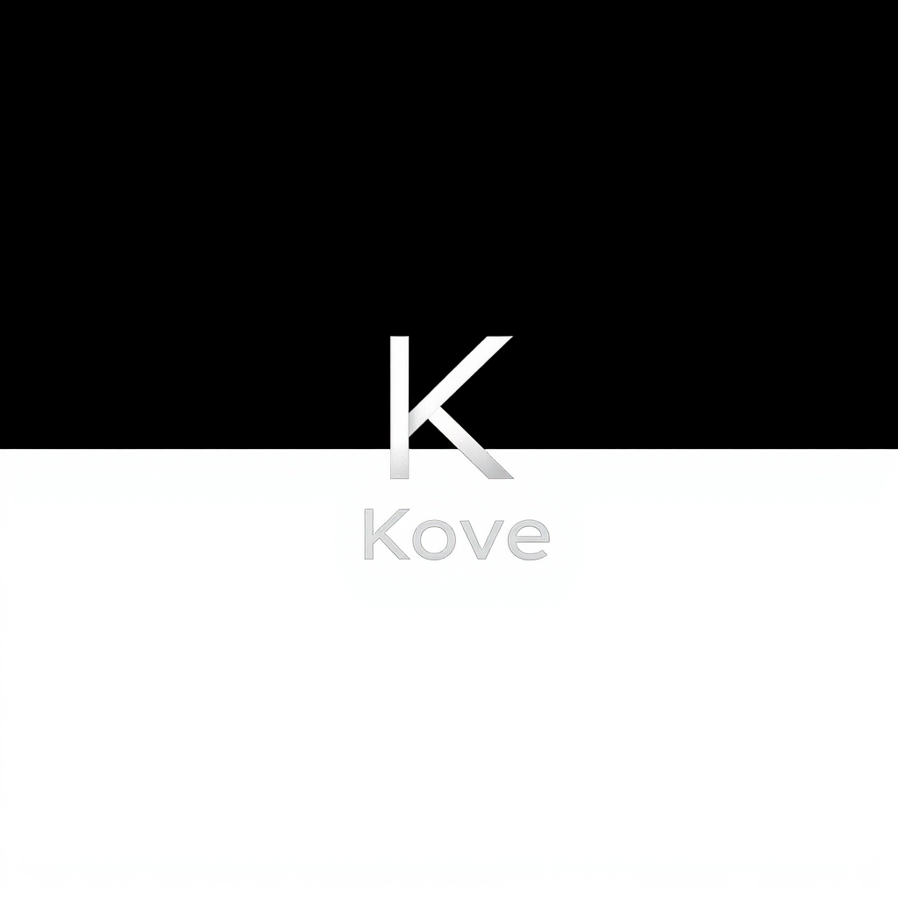
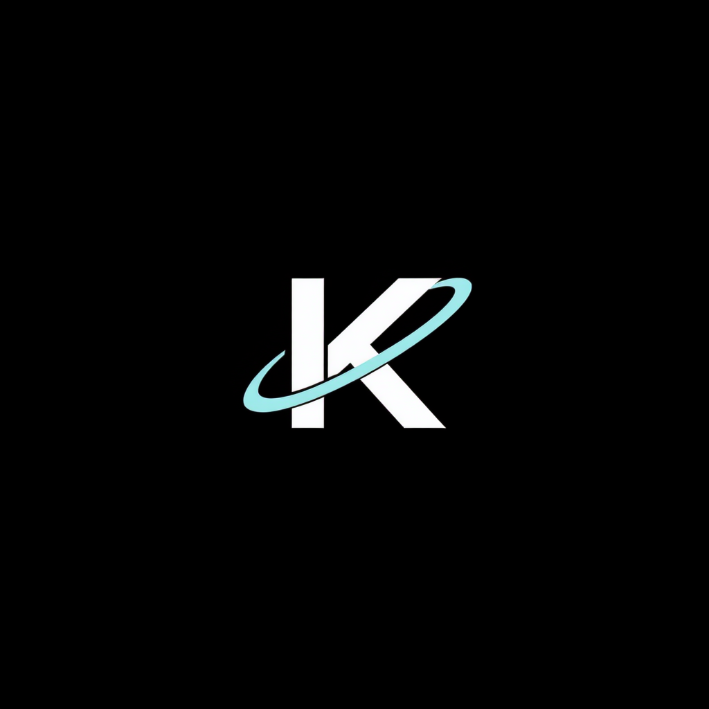
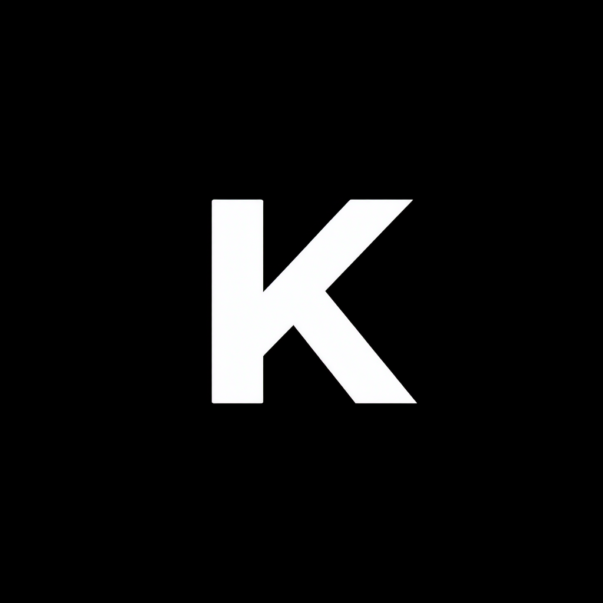

Geometric K
01-geometric-K

minimalist logo design, single isolated mark on pure solid black background #000000, premium tech brand, ultra clean, vector style, sharp geometric shapes, no gradients, no 3d, no shadows, professional, centered composition, generous negative space, abstract letter K mark, monolithic single-piece geometry, sharp diagonal cuts, white only, no text, like Linear or Vercel logo
Sliced K with cyan
02-sliced-K-cyan

minimalist logo design, single isolated mark on pure solid black background #000000, premium tech brand, ultra clean, vector style, sharp geometric shapes, no gradients, no 3d, no shadows, professional, centered composition, generous negative space, letter K mark with thin cyan #22d3ee slot/cut at intersection, mostly white K with one precise cyan accent, premium signature, no text
Sparkle mark
03-sparkle-mark

minimalist logo design, single isolated mark on pure solid black background #000000, premium tech brand, ultra clean, vector style, sharp geometric shapes, no gradients, no 3d, no shadows, professional, centered composition, generous negative space, abstract 4-pointed sparkle/star mark, asymmetric elegant proportions, white shape only, single tiny cyan #22d3ee dot at center, no text, like Radiant or Linear icon
Cove symbol
04-cove-symbol

minimalist logo design, single isolated mark on pure solid black background #000000, premium tech brand, ultra clean, vector style, sharp geometric shapes, no gradients, no 3d, no shadows, professional, centered composition, generous negative space, abstract symbol suggesting an enclosed bay or cove, semi-circular form opening upward with a thin beam line, white only with thin cyan #22d3ee accent, no text, premium maritime tech feel
Architectural block
05-block-architecture

minimalist logo design, single isolated mark on pure solid black background #000000, premium tech brand, ultra clean, vector style, sharp geometric shapes, no gradients, no 3d, no shadows, professional, centered composition, generous negative space, isometric solid white block with sharp letter K cut into negative space, edge highlight in cyan #22d3ee, like Momentum or Stripe logos, no text
Wordmark Kove
06-wordmark

minimalist logo design, single isolated mark on pure solid black background #000000, premium tech brand, ultra clean, vector style, sharp geometric shapes, no gradients, no 3d, no shadows, professional, centered composition, generous negative space, the word "Kove" as wordmark in custom geometric sans-serif typography, slight italic emphasis on the letter "o", letter spacing tight, white text only, premium tech wordmark like Vercel or Linear

minimalist logo design, single isolated mark on pure solid black background #000000, premium tech brand, ultra clean, vector style, sharp geometric shapes, no gradients, no 3d, no shadows, professional, centered composition, generous negative space, letter K mark with a thin orbital arc or ring passing through it, white K with cyan #22d3ee orbital ring detail, like Stomic or Momentum, no text
Bold Monogram
08-monogram-thick

minimalist logo design, single isolated mark on pure solid black background #000000, premium tech brand, ultra clean, vector style, sharp geometric shapes, no gradients, no 3d, no shadows, professional, centered composition, generous negative space, letter K monogram, very bold thick weight, single solid white shape, ultra confident, sharp 90-degree corners, like Klarna logo K, no text, no decoration